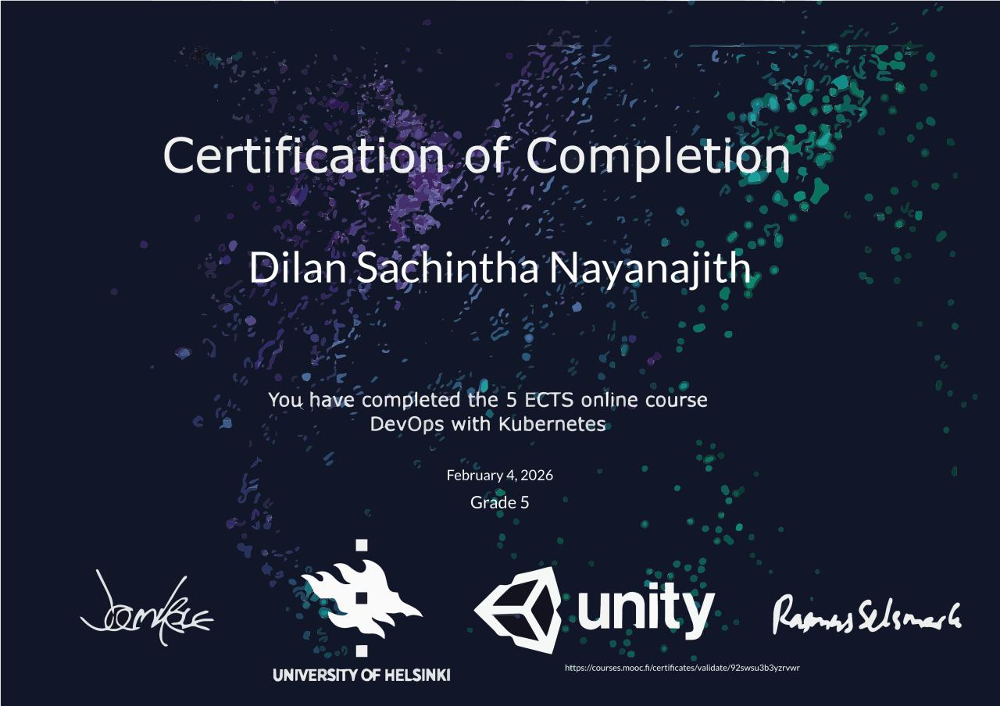

Hello, I'm
Dilan Sachintha
Software Engineer with around five years of experience building reliable, cloud-native systems. Currently working at Nokia on business-critical mediation platforms.


About
Who I am
Hi! I'm Dilan Sachintha. I'm a software engineer with around five years of software development experience and a strong foundation in cloud-native and distributed systems. I have worked extensively with Kubernetes, Docker, Python, Java, CI/CD automation, and software lifecycle management, developing solutions that are reliable, testable, and maintainable.
I bring a structured problem-solving approach, clear communication, and a strong interest in building dependable software for complex operational environments. Outside of work, I enjoy exploring nature, hiking, reading, and experimenting with emerging technologies.
Expertise
Skills & tools
Programming Languages
Java, Python, JavaScript
Database / Data Platforms
MySQL, Hibernate, MongoDB, Apache Spark
Frameworks & Runtimes
Spring Boot, React, Node.js
Cloud Technologies
Docker, Kubernetes, GCP, OpenShift
Testing Tools
JUnit, TestNG, Mockito, Robot
Messaging & Streaming
RabbitMQ, Apache Kafka
Protocols
HTTP, gRPC, REST, FTP, MQTT
Monitoring
Prometheus, Grafana, Fluentd
Career
Experience
Working with the large-scale, business-critical mediation platform, contributing to feature development, fixing critical customer issues and defects, and improving reliability.
- Improved test automation and CI/CD pipelines, helping to streamline builds, automated tests, and product releases.
- Completed a master's thesis with Nokia, designing and evaluating Kubernetes operators to replace Helm-based lifecycle management in the mediation product.
- Gained hands-on experience with highly available, cloud-native application architecture, observability, and fault management.
- Contributed to the Charging and Mediation team within CNS Product & Engineering, collaborating with a multinational team across Europe, India, Malaysia, and China.
- Built and maintained Jenkins jobs for CI/CD to improve software quality and developer experience.
Worked in the Ballerina team — an open-source, cloud-native programming language optimized for integration, running on the JVM.
- Maintained HTTP2, gRPC, Kafka, RabbitMQ, FTP, and MQTT libraries for the Ballerina language using Java.
- Proficient in analysing runtime issues like OOMs, performance degradations, and intermittent failures.
- Handled Ballerina major/minor releases from development to community release ensuring smooth product delivery.
- Increased code coverage, performed end-to-end testing, load-testing, and test automation of developed libraries.
- Created a GitHub pipeline running load-tests in an Azure Kubernetes cluster to detect performance issues.
- Led code reviews and effective source code management following open-source best practices.
Python teaching assistant for the Programming Fundamentals module. Guided students in problem-solving strategies, design, implementation, and troubleshooting.
- Developed a server monitoring tool for stock market orders and server components using Python, Node.js, and Angular.
- Built a log parsing system utilizing the Elasticsearch stack to predict upcoming server downtimes.
Offered data conversion services to clients across the USA, Europe, UK, and Australia — transforming large datasets across JSON, CSV, YAML, XLSX, and XML formats using Python.
Academic
Master's Thesis
An empirical evaluation between Helm and Kubernetes Operators for managing life cycle of cloud-native components
As part of my M.Sc. in Computer Science at the University of Helsinki, I completed my master's thesis in collaboration with Nokia. The research focused on designing and evaluating Kubernetes operators as a replacement for Helm-based lifecycle management in large-scale business-critical applications.
The work involved hands-on development and evaluation of operator patterns in a production-grade, highly available cloud-native environment — covering observability, fault management, and automated lifecycle operations at scale.
Education
Academic background
M.Sc. in Computer Science
University of Helsinki, Finland
Completed advanced coursework in network technologies, distributed systems, parallel programming, machine learning, algorithms, and compilers. Master's thesis completed in collaboration with Nokia on Kubernetes operators for cloud-native lifecycle management.
B.Sc. (Hons) in Computer Science & Engineering
University of Moratuwa, Sri Lanka
Strong foundation in object-oriented programming, design patterns, data structures, algorithms, networks, computer architecture, machine learning, and distributed systems.
1st ClassGCE Advanced Level
Mahinda College, Sri Lanka
Passed with distinction — 64th in the island, 5th in the district. Subjects: Physics, Pure Mathematics, Applied Mathematics, Chemistry, English, ICT.
Publications
Research & publications
Sinhala–English Document Alignment for Machine Translation Systems
2020 – 2021 · Python, Google Colab, PyTorch
Final-year group research at the University of Moratuwa. Focused on optimizing parallel corpus mining pipelines for low-resource languages — aligning web documents and sentences using vector representations and semantic similarity scoring.
Credentials
Licenses & certificates
Writing
Blogs

A look at new features in Java version 15.

Let No One Slide Through the Gates
Improving the security of your Node.js app.

A dive into two popular data serialization languages.
Talks
Videos
Ballerina Integration Tutorial
A step-by-step guide to building a GraphQL API with the Ballerina Programming Language, integrating Apache Kafka, and deploying the system with Docker.
Life
Memories
 Duwili Ella Hike
Duwili Ella Hike
 Diyaluma Falls Hike
Diyaluma Falls Hike
 Duwili Ella Hike
Duwili Ella Hike
 My Engagement
My Engagement
 Kadiyanlena Falls
Kadiyanlena Falls
 Diving Tryout
Diving Tryout
Downhill Skiing
Northern Lights in Rovaniemi
Snowmobiling in Ounasjoki